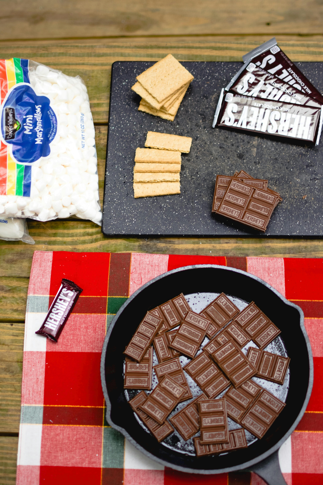

Gooey S'mores

Photo by Andrea Davis
Description
Who says you need to be camping to enjoy this fireside favorite? These s'mores are just as delicious as the classic version, and you can make them in the comfort of your own back yard!
Ingredients
- 1 milk chocolate bar
- 1 bag regular marshmallows
- A package graham crackers
Steps to Prepare
- Break chocolate bar into pieces and arrange on top of graham crackers
- Roast 1-2 marshmallows over an open flame such as a backyard bonfire
- When marshmallow is hot, toasted, and gooey, place atop the chocolate and graham cracker.
- Push the other graham cracker on top of the marshmallow and allow it to melt the chocolate below.Serve immediately.
HOME